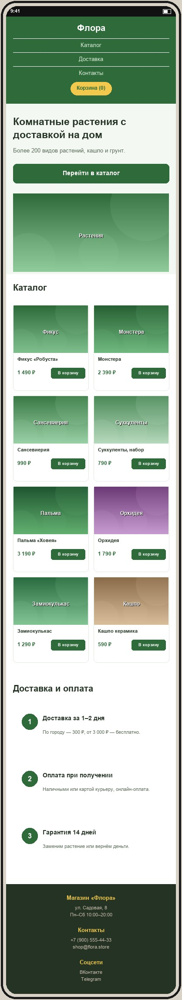

Макет мобильной версии
Файл макет-мобильный.jpg лежит в этой же папке. Сверстать нужно примерно по макету: тот же порядок блоков и общая структура, точные размеры не проверяются.

Рекомендации по мобильной версии
- Шапка. Логотип по центру, пункты меню столбиком под ним, кнопка «Корзина (0)» по центру под меню:
.header-inner { flex-direction: column }, у.logoубратьmargin-right: auto, у.cartзаменить левый отступ на отступ сверху. - Первый экран. Колонки друг под другом:
.hero-inner { flex-direction: column }, у.hero-textи.hero-imgзадатьwidth: 100%. Сначала текст и кнопка, под ними картинка. Заголовок уменьшить до 28–30 px. - Каталог. Карточки по две в ряд: у
.cardзадатьwidth: calc(50% - 12px). Кнопку «В корзину» можно уменьшить (font-size12–13 px), чтобы она помещалась рядом с ценой. - Доставка и оплата. Три блока в один столбец:
.features { flex-direction: column },.feature { width: 100% }. - Подвал. Колонки столбиком по центру:
.footer-inner { flex-direction: column; text-align: center }.
Подсказка: все переопределения добавляются в конец
css/style.css внутри @media (max-width: 768px) { ... }. Каталог — единственный блок этого варианта, который на телефоне остаётся в несколько колонок (две), остальное выстраивается в один столбец.
Проверка
- DevTools → Toggle device toolbar (Ctrl+Shift+M), ширина 375 px.
- Горизонтальной прокрутки нет.
- Порядок блоков совпадает с макетом: шапка → первый экран → каталог → доставка → подвал.